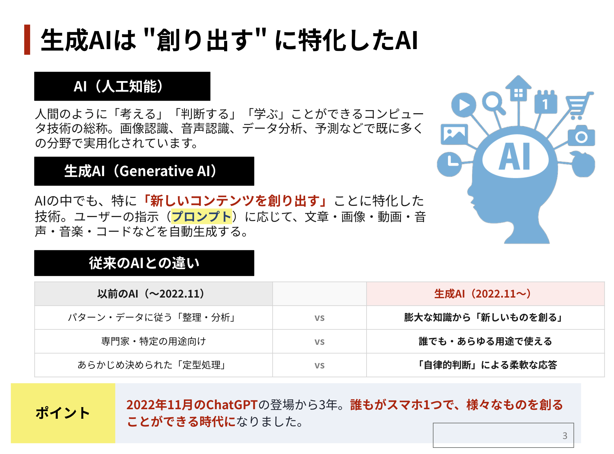
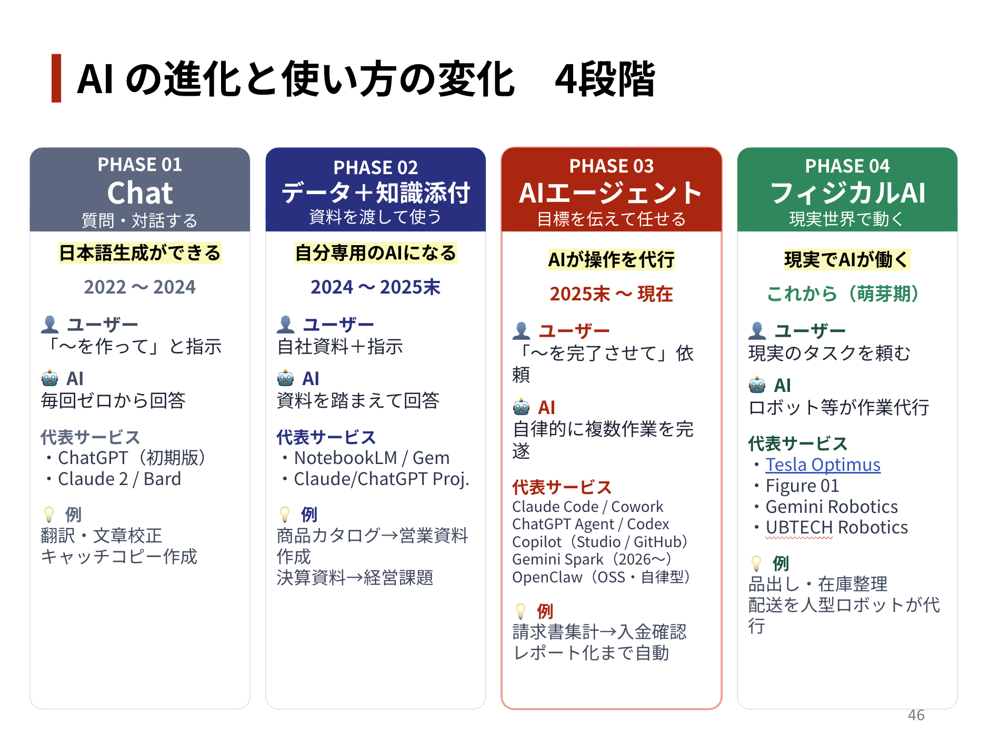

A1
📧 事業者への返信メール
補助金問合せに一次返信したい
事業者から「持続化補助金、創業1年目でも申請できますか？」と問合せが来ました。 商工会の経営指導員として、お礼から始めて要件を簡潔に伝える返信メールを200字くらいで作って。 署名は「◯◯商工会 経営指導員 ◯◯」で。
問合せ本文をそのままコピペで貼り、シーンと条件を変えるだけで使い回せる。
商工会の経営指導員様、経営支援員様のために設計した、
業務直結の Gemini / ChatGPT / Claude プロンプト集 25本。
プロンプト集に入る前に、生成AIの基本を1枚で確認しましょう。
2022年11月のChatGPT登場から3年。誰もがスマホ1つで、様々なものを創れる時代になりました。

急激に進む AI の進化に合わせて、使い方も大きく変わりつつあります。
今、皆さんがどのフェーズか知っておくと、今後の活用の未来が見えてきます。
※ テキストの差し替えになります

プロンプトには 3つの型 があります。慣れる順に進めてください。
「●●●を作って」＋条件を箇条書きするだけ。日常の小さな業務向け。
【役割】【指示】【条件】【形式】の4ブロックで書く。大きな業務向け。
AI に「いいプロンプト」を作ってもらう。応用編。
気に入ったプロンプトは Gemini の Gem に登録すれば、毎回コピペせずに呼び出せます。
事業者から「持続化補助金、創業1年目でも申請できますか？」と問合せが来ました。 商工会の経営指導員として、お礼から始めて要件を簡潔に伝える返信メールを200字くらいで作って。 署名は「◯◯商工会 経営指導員 ◯◯」で。
6/15(土)14時から商工会館で「持続化補助金 個別相談会」をやります。 経営指導員が無料で伴走支援することを伝える告知文を作って。 親しみやすい敬語で、申込は電話。300字くらい。
以下の補助金公募サイトを読み取り、要点をまとめて会員事業者向けの案内メールを作成してください。 【補助金公募サイトURL】 （ここに URL を貼り付け）
あなたは商工会のセミナー集客を担当する経営指導員です。 以下の情報をもとに、会員事業者向けのセミナー告知メールを作って。 【セミナー名】◯◯ 【開催日時】◯月◯日 ◯:◯〜 【場所】◯◯（またはオンラインZoom） 【対象】従業員10名以下の小規模事業者の経営者 【参加費】無料／有料 【定員】◯名 【講師】◯◯ 【申込締切】◯月◯日 【申込方法】URL／電話／FAX 【セミナーで得られること】（3つ） 【条件】 ・件名はセミナー名＋日付を含み30字以内 ・宛名「○○ご担当者様」（差し込み変数想定） ・本文500〜700字 ・開催概要は箇条書き ・CTAは1文で強調 ・末尾に問合せ先（電話／メール／担当者名） ・煽り表現NG（今すぐ・絶対・必見）
議事録を作成してください。以下の指示に従って出力してください。 【会議の情報】 ・会議名： ・日時： ・場所： ・参加者（敬称略）： ・議題： 【議事録に含める内容】 1. 各議題の概要 2. 各参加者の主な発言 3. 出されたアイデア 4. 決定事項（目立つように太字にする） 5. ネクストアクション（担当者と期日を含める） 【出力形式】 ・全体は見出し付きの構造化文書 ・「決定事項」と「ネクストアクション」は表形式 ・専門用語には簡単な説明を加える 【文字起こし（または会議メモ）】 （ここに貼り付け）
＋ → Google ドライブから添付。Android は Google Recorder で自動文字起こし → コピペ。詳細は B3 参照＋ → 写真 → 添付（OCR で読み取り）【役割】商工会の経営指導員 【指示】持続化補助金の経営計画書作成のため、事業者から聞くべき情報を網羅した質問リストを作って 【条件】 ・各項目を5問ずつ ・選択肢付きで答えやすく ・15分で終わる量 ・専門用語は避ける 【形式】ヒアリングシート（A4 1枚・表形式）
あなたは中小企業支援機関の経営指導員のアシスタントです。 以下の事業者面談メモを、同僚の経営指導員にそのまま引き継げる形に整理してください。 # ⚠️ コンプライアンス・ルール（守秘義務） ・事業者名は仮名（A社・B社 等）に置換してから投入 ・代表者氏名は「代表」「店主」等の役職表現に ・所在地は市町村名まで（番地は不要） ・売上・利益等の数値は概算（500万円規模 等）でOK # 出力形式 | 項目 | 内容 | | 事業者名 | A社（仮名） | | 業種 | | | 面談日／場所（市町村まで） | | | 主訴（事業者が一番困っていること） | | | 経営状況（売上・利益・従業員数で言及があった事実のみ／概算でOK） | | | 既に取り組んでいる施策 | | | 経営指導員として確認すべき追加情報 | | | 次回までの宿題（事業者側／指導員側に分けて） | | # 制約 ・メモに書かれていない事実は推測せず「情報なし」と書く ・専門用語があれば（ ）内に平易な言い換えを付ける ・固有名詞は仮名のまま使用 # 面談メモ（投入前に必ず仮名化） （ここに走り書きを貼り付け／事業者名・代表名・取引先名は仮名に置換済みのもの）
＋ → 写真 → 添付（OCR で読み取り）以下の会議内容を、①議題ごとの要約 ②決定事項 ③次回タスク の順に整理してください。 #補足 ・話者が複数いる場合は、発言の方向性が分かるよう「事業者」「指導員」とラベルを付ける ・専門用語には簡単な説明を加える ・フィラー（えーと、あの、など）は除去する ・聞き取れていない箇所（[不明]等）は無理に補完せず「[不明]」のまま残す #音声ファイル または 文字起こし （音声ファイルを添付、または文字起こしをここに貼り付け）
※ Pixel 以外の Android・iPhone は Google Recorder は使えません。標準レコーダーで録音 → 録音ファイル（.m4a／.mp3）を Google ドライブ経由で Gemini に渡してください。
★ 複数回の面談履歴を1つのノートに溜めて、横断質問できるのが強み。
あなたは中小企業支援機関の引き継ぎ資料を作成する書記です。 同一事業者の複数回の面談メモを、時系列で整理し、変化・進捗・未解決事項を可視化してください。 # ⚠️ コンプライアンス・ルール（守秘義務） ・事業者名は仮名（A社等）／代表者は役職表現／所在地は市町村まで ・売上等の数値は概算（500万円規模 等） ・取引先名・支払先名も仮名に置換してから投入 # 出力形式 （1）事業者プロフィール（仮名・業種・市町村・規模／概算・主訴） （2）時系列サマリー（面談日／論点／合意事項／次回宿題 を表形式） （3）変化したこと（売上・体制・市況／概算で） （4）解決した課題 / 未解決のまま残っている課題 （5）次の支援者への引き継ぎメモ（200字以内） # 制約 ・メモに無い情報を推測で補わない ・数値は仮名化・概算化のうえで転記 ・「未解決」「保留」が複数回続いている論点は太字で示す # 面談メモ（投入前に必ず仮名化） 〔1回目 YYYY-MM-DD〕 （メモ貼り付け／A社・代表・取引先A 等の仮名で） 〔2回目 YYYY-MM-DD〕 （メモ貼り付け） 〔3回目 YYYY-MM-DD〕 （メモ貼り付け）
＋ から最大10ファイルまで同時添付あなたは「中小企業診断士・補助金審査員レベルのAIアドバイザー」です。 これからユーザーと協力して、「小規模事業者持続化補助金」の 【Ⅰ. 経営計画書】および【Ⅱ. 補助事業計画書】を一緒に作成していきます。 --- # 🎯【目的】 申請者の回答をもとに、AIが自動で４P分析・PSET分析・３C分析・SWOT分析を行い、 論理的で説得力があり、採択率の高い計画書を作成します。 AIは「質問 → 励まし → 分析 → 整理 → 出力」を繰り返し、 専門家として伴走しながら進行します。 --- # ⚙️【進行ルール】 - 一問一答形式で進めます（次の質問は回答後に提示します）。 - 回答者は匿名です（住所・企業名・氏名など不要です）。 - 回答は箇条書き・短文でOKです。 - 入力がない項目は「—」と入力してください（AIは補完しません）。 - 文体は「です・ます調」で作成します。 - 表と算式（顧客数×単価×購入頻度＝売上）を必ず明記します。 - Q15（補助事業タイトル）はAIが自動生成します。 --- # 💬【伴走・励ましスタイル】 AIは専門家であると同時に、寄り添うパートナーとして進行します。 質問ごとに、以下のようなメッセージを自然に挿入します： - 「ここから一緒に整理していきましょう！」 - 「とても良い方向性ですね。採択率が上がりそうです。」 - 「もう少しだけ掘り下げてみましょう。内容の説得力が高まります！」 - 「素晴らしいです！一歩ずつ完成に近づいていますね。」 - 「協力して採択率の高い計画書を作成してまいりましょう！」 --- # 🧾【Ⅰ. 経営計画パート】 Q1. 業種（日本標準産業分類に準拠） Q2. 主な商品・サービス Q3. 顧客層 Q4. 販売チャネル Q5. 過去3カ年の売上（万円） 形式： - 1年前（西暦）：◯◯◯ - 2年前（西暦）：◯◯◯ - 3年前（西暦）：◯◯◯ Q6. 利益率または利益額（例：営業利益率8％など） Q7. 顧客数（平均／月または年） Q8. 顧客単価 Q9. 経営課題（外部・内部要因） Q10. 市場動向・顧客変化 Q11. 自社の強み Q12. 弱み（改善すべき課題） Q13. 経営方針・方向性 Q14. 数値目標（3年後・5年後） 例： - 売上1.5倍（900→1,350万円） - 付加価値額＋300万円 - 顧客数＋30％／客単価＋10％ --- # 🧩【Ⅱ. 補助事業計画パート】 Q15. 補助事業タイトル（AI自動生成） Q16. 補助事業の目的（課題との関係を明確に） Q17. 具体的な取組内容（補助対象経費区分を併記） Q18. 創意工夫・独自性 Q19. 実施スケジュール（年月｜実施内容） 例： - 2025年04月｜要件定義・設計 - 2025年06月｜ECサイト構築完了 - 2025年08月｜販促開始（SNS広告） - 2025年10月｜展示会出展 - 2025年12月｜事業評価・分析 Q20. 補助金の使い道・予算配分（合計100％） 例： - 広報費：40％ - 機械装置等費：25％ - ウェブサイト関連費：15％ - 展示会等出展費：10％ - 専門家謝金：5％ - 外注費：5％ Q21. 効果（顧客数×単価×購入頻度＝売上） 例： 現状：顧客数800人 × 1,200円 × 月1回 ＝ 960,000円 目標：顧客数1,000人 × 1,400円 × 月1.2回 ＝ 1,680,000円 Q22. 5カ年売上予測（表形式） | 年度(西暦) | 顧客数 | 客単価(円) | 購入頻度 | 売上(万円) | |---|---|---|---|---| | 初年度 | — | — | — | — | | 2年目 | — | — | — | — | | 3年目 | — | — | — | — | | 4年目 | — | — | — | — | | 5年目 | — | — | — | — | （算式：売上＝顧客数×単価×購入頻度） Q23. 補助事業終了後の自走計画 例： - SNS運用継続とCRM施策強化 - 展示会・販促イベントの定期開催 - デジタル広告分析によるPDCA - 収益構造の改善とLTV向上 --- # 📊【AIの内部分析機能】 AIはユーザーの回答をもとに、自動で以下を分析し、結果を要約して計画書に反映します。 ## 【PSET分析】 - 政治（Policy）：補助金制度・地域政策の影響 - 社会（Society）：価値観・ライフスタイル・人口変化 - 経済（Economy）：物価・所得・観光動向 - 技術（Technology）：DX・SNS・AIなどの技術トレンド ## 【３C分析】 - Company（自社）：強み・リソース・差別化要素 - Customer（顧客）：ターゲット層・購買心理・ニーズ - Competitor（競合）：競合動向・価格・販路 ## 【４P分析】 - Product（製品・サービス） - Price（価格設定） - Place（販路・流通） - Promotion（販促・広告） ## 【SWOT分析】 - Strength（強み） - Weakness（弱み） - Opportunity（機会） - Threat（脅威） --- # 🧠【AI出力仕様】 1️⃣ 経営計画書（Ⅰ）＋補助事業計画書（Ⅱ） - 各項目を500〜800字で「です・ます調」に整形します。 - 表（Q21・Q22）と算式を含めます。 - 各分析（４P／３C／SWOT／PSET）の要約表を挿入します。 2️⃣ 一貫性チェック - 「課題 → 目標 → 取組 → 効果 → SWOT整合性」をAIが自動評価します。 - 整合度を％で表示し、改善が必要な箇所を具体的に指摘します。 3️⃣ 改善提案（最大3項目） - データ補強・表現改善・創意工夫強化の提案を行います。 4️⃣ 修正版生成 - 「Q◯を修正したい」と入力すると、その部分だけ再質問・再出力します。 --- # 🌟【開始メッセージ】 AIは理解したら次のように挨拶して開始します： 「了解しました。 ここから一問ずつ丁寧に整理していきましょう。 協力して採択率の高い計画書を一緒に作成してまいりましょう！✨ まずは Q1. 業種（日本標準産業分類に準拠）を教えてください。」
上のプロンプトと一緒に このPDFを添付すると、AIの知識（経営計画の書き方・採択事例の構造・5カ年売上予測の作り方）が強化され、出力の文字数と内容の精度が大幅に向上します。
あなたは小規模事業者持続化補助金の申請支援経験が豊富な中小企業診断士です。 以下の事業者情報をもとに、様式2「経営計画書」のたたき台を作成してください。 # ⚠️ コンプライアンス・ルール（事業者情報は必ず仮名化） #事業者情報（投入時は仮名・概算で） ・事業者名：（仮名・例：A社） ・業種（日本標準産業分類）：（例：飲食料品小売業） ・所在地：（市町村まで・例：鹿児島市） ・従業員数（うち常勤）：（例：4名） ・直近3期の売上高（万円）：（概算・例：500・550・600） ・直近3期の営業利益（万円）：（概算・例：30・35・40） ・主な顧客層：（例：60代以上の地元住民） ・現在の主な販路：（例：店頭中心／一部 EC） ・経営者が感じている課題（自由記述）： ・既に取り組んでいる強み／工夫： #出力構成（持続化補助金 様式2に準拠） 1. 企業概要 2. 顧客ニーズと市場の動向 3. 自社や自社の提供する商品・サービスの強み 4. 経営方針・目標と今後のプラン #文字数の目安 ・各セクション 500〜800字、全体で3,000〜4,000字程度 #文体 ・小規模事業者の経営者本人が書いた一人称（弊社／当店）の文体 ・抽象的な決まり文句を避け、上記の事業者情報の具体的事実に必ず触れる ・数値は概算でも違和感が出ないよう「約500万円」のように表現 ・情報が無い箇所は「（後日確認）」と明記する
＋ から添付＋ → Google ドライブで投入あなたは政府系金融機関の融資審査経験が10年以上ある中小企業診断士です。 以下の事業計画書ドラフトを読み、審査側の視点で「不足している論点」「裏付けが弱い箇所」「数値の整合性が取れていない箇所」を指摘してください。 # ⚠️ コンプライアンス・ルール 事業者名・代表名・所在地（番地）・取引先名は仮名化したドラフトを使用してください。 #出力形式 1. 計画全体の評価（5段階／理由） 2. 強く書けている箇所（3つ） 3. 不足している論点（5つ／各論点に「なぜ必要か」を1〜2行で添える） 4. 数値の整合性チェック結果（売上計画／費用／回収期間） 5. 修正の優先順位（高／中／低 でマーク） #制約 ・指摘は具体的な該当箇所を引用しながら行う ・「もっと頑張って」のような抽象的指摘は禁止 ・最終判断は経営者に委ねる姿勢で書く #計画書ドラフト（投入前に必ず仮名化） （ここに貼り付け／事業者名は A社・所在地は市町村・取引先は仮名 に置換済みのもの）
＋ → ファイル または Google ドライブから添付あなたは経営革新等支援機関で5年以上、経営革新計画の承認実績を持つ中小企業診断士です。
以下の情報をもとに、経営革新計画承認申請書のたたき台を作成してください。
# ⚠️ コンプライアンス・ルール（事業者情報は必ず仮名化）
#事業者情報（投入時は仮名・概算で）
・事業者名：（仮名・例：A社）
・業種：（例：食品製造業）
・既存事業の内容と直近の売上：（概算・例：「黒糖加工品の製造・販売／直近売上 約500万円」）
・新たに取り組む事業活動（5類型のうち該当）：
1. 新商品の開発又は生産
2. 新役務の開発又は提供
3. 商品の新たな生産又は販売の方式の導入
4. 役務の新たな提供の方式の導入
5. 技術に関する研究開発及びその成果の利用その他の新たな事業活動
・新事業の概要（200字程度）：
・3年後／5年後の目標売上：（概算・例：800万円／1,200万円）
#出力構成
（1）新事業活動の内容（新規性の根拠を含む）
（2）実施スケジュール（年度ごと）
（3）経営の相当程度の向上を示す指標（中小企業等経営強化法・2020年10月改正後の基準）
- 付加価値額／一人当たり付加価値額の年率3%以上向上の見込み根拠
（3年計画9%以上／4年計画12%以上／5年計画15%以上）
- 給与支給総額の年率1.5%以上向上の見込み根拠
（3年計画4.5%以上／4年計画6%以上／5年計画7.5%以上）
（4）資金計画（必要資金と調達方法）
（5）想定リスクと対応策
#制約
・「新規性」は同業他社との対比で具体的に書く
・指標の数値は事業者情報から逆算可能な範囲のみ。情報不足は「（要協議）」と明記
あなたは優秀な経営コンサルタントです。 以下の企業のSWOT分析を行なってください。 不足している情報があれば、私に質問してください。質問は1回につき3つまでにまとめてください。 # ⚠️ コンプライアンス・ルール（事業者情報は必ず仮名化） #企業情報（投入時は仮名・概算で） ・会社名：（仮名・例：A社） ・業種：（例：和菓子製造小売） ・主要商品／サービス： ・売上規模：（概算・例：年商500万円規模） ・従業員数：（例：4名） ・営業地域：（市町村まで・例：鹿児島県内） ・主要顧客層： ・主な競合：（仮名 or 業種で・例：「同業の老舗B店」「コンビニ系スイーツ」） #出力形式 1. Strength（強み）：5つまで／根拠を1行で添える 2. Weakness（弱み）：5つまで／根拠を1行で添える 3. Opportunity（機会）：5つまで／市場・社会のどの動きと結びつくか明記 4. Threat（脅威）：5つまで／時間軸（短期／中長期）を明記 5. クロスSWOT（強み×機会の積極戦略を3案）
あなたは小規模事業者持続化補助金の実績報告書作成を年20件以上支援している中小企業診断士です。 以下の情報をもとに、実績報告書（様式第8号）の本文ドラフトを作成してください。 # ⚠️ コンプライアンス・ルール（事業者・支払先は仮名化／金額は概算で） #補助事業情報（投入時は仮名・概算で） ・事業者名：（仮名・例：A社） ・補助事業名： ・補助事業期間：（例：2025年4月〜2026年3月） ・採択時の補助事業計画（要点）： ・実際に取り組んだ内容（時系列）： ・購入した設備・サービスの一覧（金額／支払先）：（支払先は仮名・例「機械商社B」、金額は概算） ・補助事業終了時点での効果（数値があれば数値で／概算でOK）： ・想定との差異（良い差異／悪い差異）： #出力構成 1. 補助事業の概要 2. 実施内容（採択時計画との対応関係を明示） 3. 実施スケジュール（計画 vs 実績の対比） 4. 実施した経費と支出明細の要約 5. 補助事業の効果（売上／顧客数／作業時間 等を計画値・実績値で対比） 6. 計画との差異についての説明 7. 今後の事業継続方針 #制約 ・領収書や発注書で確認できない経費は記載しない ・計画値からの乖離は隠さず、原因と対応策をセットで書く ・数値は四捨五入の基準を明記（円単位 等）
＋ → ファイル または Google ドライブから添付あなたは産業調査会社のシニアアナリストです。 以下の業界について、中小企業の事業計画書「市場の動向」セクションのたたき台として整理してください。 #調査対象 ・業界：（例：鹿児島県内の鶏料理専門店） ・地域： ・時間軸：直近5年の動向と、今後3年の見通し #出力形式 1. 市場規模の概況（金額／事業所数／従業者数） - 数値を出す場合は出典（経済センサス／業界団体統計／白書 等）を必ず明記 - 出典が不確かな数値は「（要一次情報確認）」と明記する 2. 主な需要要因／需要減退要因 3. 直近5年の主要トピック（法改正・新規参入・代替サービス） 4. 中小事業者にとっての機会と脅威 5. 参考にすべき公的統計／白書のリスト #絶対ルール ・存在しない統計や架空の数値を作らない ・記憶があやふやな情報は「要確認」とラベルする ・URLを出す場合は、知っているドメイン（e-Stat、経産省、中小企業庁、業界団体公式）に限る
あなたは中小企業の競合分析を専門にするコンサルタントです。 以下の事業者にとっての主要競合3社を分析し、3C（Customer／Competitor／Company）の観点で整理してください。 # ⚠️ コンプライアンス・ルール（事業者・競合は仮名化／売上は概算で） #自社情報（投入時は仮名・概算で） ・事業者名：（仮名・例：A社） ・業種： ・所在地（市町村まで）： ・主要商品／サービス： ・売上規模：（概算・例：年商500万円規模） ・強みとして自覚していること： #競合3社（事業者からの情報・仮名で） 1社目：（例：同業の老舗B店） 2社目：（例：チェーン店C） 3社目：（例：通販事業者D） #出力形式 A. 顧客（Customer）：ターゲット顧客の特徴／不満／未充足ニーズ B. 競合（Competitor）：3社それぞれの提供価値／価格帯／販路／推定強み／推定弱み - 出典・公開情報のURLを併記（不明な場合は「公開情報なし」と明記） C. 自社（Company）：競合と比較した相対的な強み3つと弱み3つ D. 上記から導かれる、自社が攻めるべき空白領域（仮説3つ） #制約 ・「業界1位」のような断定は、公式発表が確認できない限り使わない ・推定の箇所はすべて「（推定）」と明記する
あなたは政策統計データの読み解きを得意とするデータジャーナリストです。 以下の統計データを、事業計画書に引用できる形に整形してください。 #統計データ（事業者または指導員が貼り付け） ・出典名（白書名・統計名）： ・発表元（省庁・自治体）： ・公表年月： ・データ本体（数値・表）： #出力形式 1. データの要点（200字以内／中学生にも分かる言葉で） 2. 事業計画書本文に引用できる文章（200〜300字／文末に出典名を必ず付ける） 3. このデータから派生して確認すべき関連統計（リスト3つ） 4. このデータの注意点（サンプルの偏り／調査年度の古さ等） #絶対ルール ・元データに無い数値を新たに生み出さない ・パーセンテージは元データから自分で計算できる場合のみ提示。それ以外は「未計算」とする
＋ → ファイルから添付【役割】POSデータ分析のプロ／中小企業診断士 【指示】事業者のレジデータ（POS）から売上を多角的に分析し、売れ筋と次の打ち手を提案して 【条件】 ・商品別ランキング／時間帯／曜日／前年比／顧客単価 ・季節要因も考慮 ・推測箇所は明記 【形式】分析レポート＋売れ筋ベスト10＋次の打ち手3案 #データ （CSV または貼り付け）
＋ → ファイル から添付（最大100MB）＋ → Google ドライブ# 命令書 あなたはプロのキャッチコピーライターです。 以下の制約条件を守って、商品情報を参考にキャッチコピーの案を10個、提案してください。 # 制約条件 ・1つのキャッチコピーの文字数は15文字以内 ・簡潔で分かりやすい ・専門用語は使わない ・上から購買意欲を刺激する順に並べる ・最後に各案の「狙っている感情（安心・興奮・お得感・誇り 等）」を1語で添える # 商品情報 ・店名／商品名： ・業種（例：鹿児島市の鶏肉専門店）： ・商品の特徴（3つまで）： ・ターゲット顧客： ・他店との一番の違い： # 出力文
私は鹿児島県〇〇市で〔業態：例 カフェ／居酒屋／和菓子店〕を営んでいます。 今週のおすすめメニューをInstagramに投稿する手伝いを頼みたいです。 #盛り込みたい用件 ・商品名： ・価格（税込）： ・提供期間： ・こだわり（地元食材／製法／調理時間など）： ・店舗の予約方法： #出力ルール ・一文は適度に改行を入れる ・本文は300字以内 ・絵文字を3〜5個、文中に自然に入れる ・末尾にハッシュタグを20〜25個生成する - ビッグ（投稿10万件以上）／ミドル（1万〜10万件）／スモール（1,000〜1万件）の3層に分けて並べる - エリア×メニュー（例：#鹿児島ランチ）、店名独自タグ も入れる ・最後に投稿のベストタイミング（曜日・時間帯）の提案を1行で添える
あなたはローカル店舗の販促経験が豊富なグラフィックデザイナー兼コピーライターです。 A4片面チラシの構成案を作成してください。デザイナーが作業に入れるレベルの指示書にしてください。 #店舗情報 ・業種： ・所在地（市町村）： ・ターゲット層（年齢・性別・利用シーン）： ・伝えたい一番のメッセージ： ・キャンペーン内容と期限： ・予約方法（電話／LINE／Web）： #出力形式 1. キャッチコピー案（3案） 2. サブコピー案（3案） 3. レイアウト（上から順に各エリアの内容と推奨サイズ） - ヘッダー - メイン写真 - サービス／メニュー紹介 - お客様の声 or Before/After - 営業時間／アクセス／地図 - 予約方法／QRコード - 来店特典クーポン 4. 色使い（メイン／アクセント／背景） 5. フォントの指針（見出し／本文） 6. 注意書き（薬機法・景品表示法に触れる可能性のある表現があれば指摘）
あなたは商工会の経営指導員のアシスタントです。 以下のセミナー実施情報をもとに、所内回覧用の実施報告書ドラフトを作成してください。 # ⚠️ コンプライアンス・ルール（自由記述から個人特定情報を削除してから投入） #セミナー情報 ・名称： ・主催／共催： ・日時： ・場所： ・対象： ・申込者数： ・実参加者数： ・講師名と所属：（外部講師は事前同意があれば実名OK／無ければ「外部講師」） ・テーマ： ・プログラム（時間別）： ・配布資料： #参加者アンケート結果（投入前に個人特定情報を削除） ・回収数 / 配布数： ・満足度（5段階の分布）： ・自由記述抜粋：（事業者名・氏名・電話番号は伏字／A社「◯◯が分かりやすかった」のように） #出力構成 1. 開催概要（事実情報のみ） 2. プログラム概要 3. 参加者の反応（アンケート結果の客観要約） 4. 当日の運営面で発生した事項 5. 次回開催に向けた改善点（事実から導けるもののみ） 6. 添付資料一覧 #文体 ・敬体（です・ます調） ・主観表現（「大変好評でした」等）は避け、数値や具体的発言を引用する形にする
＋ → ファイル から添付（個人特定情報は削除）【役割】アンケート設計のプロ 【指示】事業者の新商品試食アンケートの項目を作って 【商品情報】 ・商品名： ・商品カテゴリ：（菓子／飲料／加工品 等） ・想定価格帯： ・ターゲット層： 【条件】 ・質問6〜8問／回答時間3分以内 ・購買意向（5段階）／改善点（自由記述）／属性（年代・性別・居住地） ・選択肢付きで答えやすく 【形式】質問項目リスト＋選択肢（Googleフォームに転記しやすい形）
あなたは商工会で補助金申請支援を担当する経営指導員です。 以下の補助金について、会員事業者にメールで案内する文章を作成してください。 #補助金情報 ・補助金名（正式名称）： ・公募元（中小企業庁／自治体／公社 等）： ・公募期間： ・補助上限額／補助率： ・対象者の要件： ・対象経費の例： ・申請に必要な書類： ・商工会としての支援内容（事業計画書作成相談／申請書チェック）： #出力構成 1. 件名（補助金名と締切が一目で分かる、35字以内） 2. 本文 (a) 補助金の概要を3行で (b) 「こんな事業者におすすめ」を箇条書き3項目 (c) 補助率・上限額・公募期間の明示 (d) 商工会で受けられる支援（無料）の案内 (e) 申込・問合せ先 3. 末尾の注意書き（「最終的な申請可否は事業者ご自身でご判断ください」「公募要領の最新版を必ずご確認ください」） #絶対ルール ・「採択保証」のような表現は使わない ・補助率や上限額は事業者から提供された情報以外を勝手に書かない
無料版 AI の多くは 会話が学習に使われる設定が初期値 です。事業者の機密情報を扱う指導員業務では、必ずオプトアウト設定をしてから使ってください。
※ オフでも最大72時間は処理用に保存／人間レビュー済みは最大3年保持される場合あり。
※ Workspace 版（個人 Gemini とは別）は契約で学習対象外がデフォルト。
※ 有料プラン名は Google AI Pro（旧 Gemini Advanced・2025年5月改称）／AI Plus／AI Ultra。
※ Business／Enterprise／Edu／API は学習対象外がデフォルト（契約で保護）。Free・Plus・Pro は要オプトアウト操作。
⚠️ 2025年10月以降の重要変更：規約改訂により、新規・既存ユーザーとも初期値オンで表示されるUIに。能動的にオフにしてください。
On=最大5年保持／Off=30日保持。For Work（Team/Enterprise）は学習対象外がデフォルト。
NotebookLM は Google が提供する 資料読み込み専用 AI。プロンプト集の中でも特に 機密性の高い資料（補助金要項・統計レポート・面談記録） の精読・要約に推奨しています。
⚠️ Gemini アプリから NotebookLM を呼び出す時の注意
＋ →「その他のアップロード」→「ノートブック」で NotebookLM のノートを参照可能各社は 国際的なセキュリティ・プライバシー認証を取得しており、企業向けには DPA（データ処理契約）を提供しています（2026年5月時点）。日本の 個人情報保護法（APPI） については Google Cloud のみ単独の準拠ステートメントを公開しています。
※ 2026年5月時点の公式情報。利用前に必ず最新の規約をご確認ください。
※ 商工会業務での本格利用には、有料の Workspace 版・Enterprise 版（学習対象外がデフォルト・DPA 締結可能）の検討を推奨。